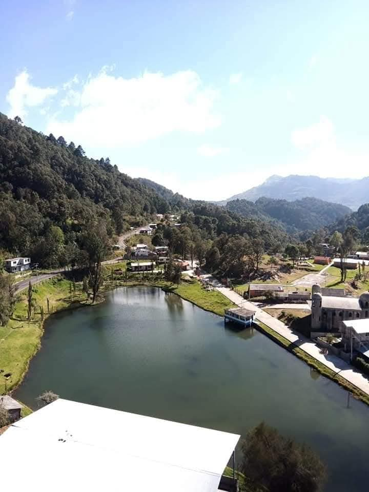
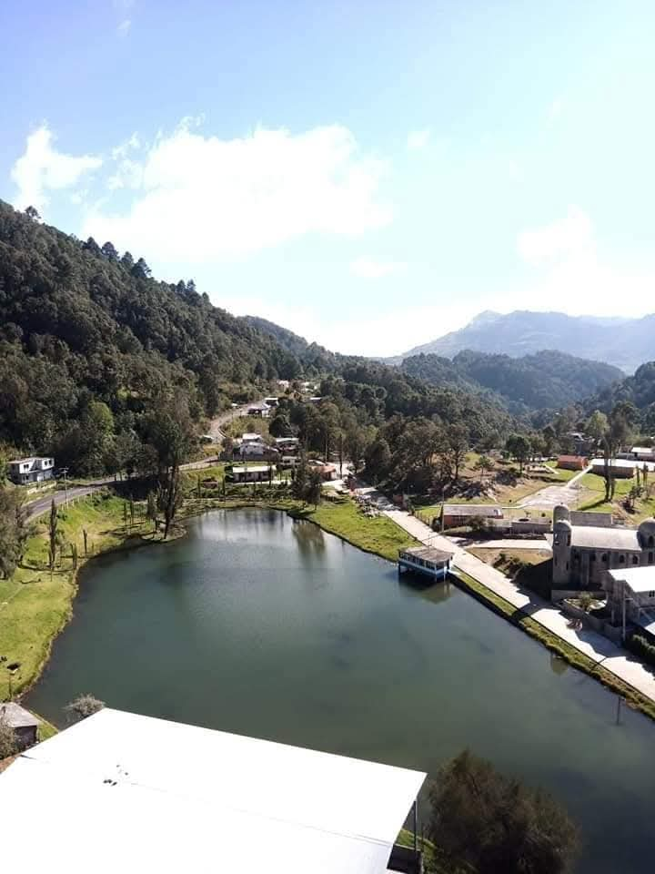

|
|
| principal |        |
La historia de la comunidad de las siete lagunas en 1955 todavia se conservaban las siete lagunas, pero habia una guerra espiritual entre los triquis y los tacuates y cada que los tacuates subian hacian subir la laguna y se las llevaban, y subian los tacuates en la tarde y se llebaban las lagunas, asi hicieron con cinco lagunas, entonces una tarde llegaron los tacuates y empezo a llover y se andaba saliendo la laguna sucia y vieron los abuelos que esa laguna se la estaban llevando empezaron a tapar con rocas y ramas y asi lograron impedir que se fuera esa laguna. sumideros hay siete, los sumideros ya estaban desde la creacion del mundo y las personas cuando tenian problemas con otras personas las llevaban y los arrojaban a los sumideros, ahy la gente tambien se suicidaban, los sumideros son muy profundos y no hay oxigeno,se dice que solo hay agua hasta el fondo. la cueva de los huesos tambien llamada min y vivian en las oscuridad un dia que hubo sol ellos se refugiaron en la cueva se dice que el sol fue el que los mato dentro de esa cueva. la cueva del trueno; anteriormente el 24 de abril hace muchos años subian gente de los pueblos alrededores llevaban ofrendas como comida, fruta entre otras cosas para que hubiera buena lluvia y buena temporada de cosecha. la laguna encantada se cree que antes de 1900 anteriormente la gente no podia pasar cerca de la laguna, porque esa laguna se levantaba y jalaba a la gente la gente tenia que caminar en las lomas para porder pasar, llamaron a un sacerdote para bendecir a la laguna pero el sacerdote no tenia poder y la laguna lo jalo, asi que tuvieron que solicitar otro sacerdote para que hiciera varias limpias, la laguna estaba desde llano de brinco hasta donde se hubica actualmente, y desde halla se vino rezando el sacerdote hicieron siete misas para que pudieran controlarla y es asi como se quedo con el nombre de laguna encantada. la pelea con los tacuates si los señores de chica lograban aprensar a un tacuate lo llevaban a cañada tejocote, ahy donde cae la helada los dejaban morir por el frio, pero cuando los tacuates agarraban a los triquis los llevaban a los hormigueros y los dejaban morir en el pleno sol. El dia de los muertos Un señor el cual habia muerto sus esposa y su mamá se burlaba de la gente que celebraba el dia de muertos y que ponian ofrendas en el altar, un dia decidio poner popo de toro en el altar porque no creia que sus familiares que ya habian muerto venian para llevarse cosas del altar, y cuando salio al campo vio a su esposa y a su mamá que llevaban el popo de toro que el habia dejado en el altar. Dicen que alla por chicahuaxtla estaba un dragon, y tambien estaba un matrimonio el cual la mujer no queria al hombre entoces la señora lo llamo y dijo vamos a ver en ese agujero porque hay mucho instrumentos musicales, y le creyo el hombre y una ves q la señora lo logro llevar cerca de ese sumidero entonces la señora lo empuja y se cae y cuando el cae dentro de ese sumidero cayo encima de un gran dragon, el animal no lo podia comer y se refuguio encima de ese gran dragon, y un cuervo venia a alimentarlo y asi pasando tres años encima del dragon, un dia el dragon se hiba salir y en cuando el dragon salio empezo a sacudirse y mucha gente se hizo rica por sus plumas y repartio mucho conocimiento y a los de cuquila les dio el poder de hacer barros, mientras que a los triquis le dio un diente por eso se envidian los unos a los otros. |
 |